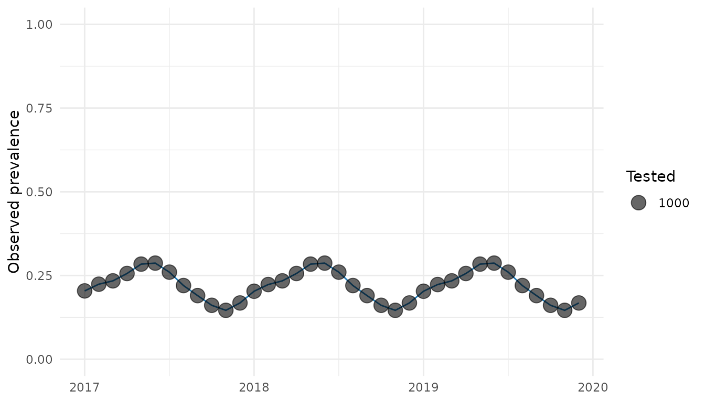

Preparing data and configuration for anatembea
Source:vignettes/preparing-an-analysis.Rmd
preparing-an-analysis.RmdParticle Markov chain Monte Carlo (pMCMC) can be computationally expensive. A longer run will not repair invalid counts, incorrectly ordered dates, or a poorly specified initialization. This article therefore prepares and freezes the analysis specification before tuning begins.
At the end of this article you will have:
- a checked monthly prevalence dataset;
- a documented model specification; and
- enough provenance to reproduce the analysis.
The next article, Tuning an anatembea pMCMC, uses that frozen specification to select a particle count and proposal covariance.
Required data
For a single comparison group, run_pmcmc() expects one
row per month and at least these columns:
-
month: a monthly time variable, represented here byzoo::yearmon; -
tested: the number of people tested; and -
positive: the number who tested positive.
The package includes simulated data that we can use throughout this series.
analysis_data <- dplyr::filter(
dplyr::select(anatembea::sim_data_tanzania, month, positive, tested),
month <= zoo::as.yearmon("Dec 2019")
)
head(analysis_data, 4)
#> month positive tested
#> 1 Jan 2017 204 1000
#> 2 Feb 2017 224 1000
#> 3 Mar 2017 234 1000
#> 4 Apr 2017 256 1000For paired ANC comparisons such as comparison = "pgmg",
prepare separate primigravidae and multigravidae datasets with the same
three columns and pass them as data_raw_pg and
data_raw_mg. See run_pmcmc() for all
supported comparison groups.
Validate before fitting
The helper below checks structural errors while allowing a month in
which both counts are missing. anatembea can treat such a
month as an unobserved time point, but a missing positive
paired with a non-missing tested (or vice versa) is
ambiguous and should be resolved.
validate_monthly_prevalence <- function(data) {
required <- c("month", "positive", "tested")
missing_columns <- setdiff(required, names(data))
if (length(missing_columns) > 0) {
stop("Missing required columns: ", paste(missing_columns, collapse = ", "))
}
month_key <- format(data$month, "%Y-%m")
if (anyNA(month_key)) stop("`month` contains missing or unparseable values.")
if (is.unsorted(data$month)) stop("Rows must be in chronological order.")
if (anyDuplicated(month_key)) stop("Each month must appear at most once.")
one_count_missing <- xor(is.na(data$positive), is.na(data$tested))
if (any(one_count_missing)) {
stop("`positive` and `tested` must be missing together.")
}
observed <- !is.na(data$positive)
positive <- data$positive[observed]
tested <- data$tested[observed]
if (any(!is.finite(c(positive, tested)))) {
stop("Observed counts must be finite.")
}
if (any(positive != floor(positive) | tested != floor(tested))) {
stop("Observed counts must be whole numbers.")
}
invalid_counts <- positive < 0 | tested < 0 | positive > tested
if (any(invalid_counts)) {
stop("Counts must satisfy 0 <= positive <= tested.")
}
expected <- format(
seq(min(data$month), max(data$month), by = 1 / 12),
"%Y-%m"
)
gaps <- setdiff(expected, month_key)
if (length(gaps) > 0) {
warning("Missing calendar months: ", paste(gaps, collapse = ", "))
}
invisible(data)
}
validate_monthly_prevalence(analysis_data)
invalid_example <- analysis_data[1, ]
invalid_example$positive <- Inf
try(validate_monthly_prevalence(invalid_example))
#> Error in validate_monthly_prevalence(invalid_example) :
#> Observed counts must be finite.
invalid_example$positive <- 1.5
try(validate_monthly_prevalence(invalid_example))
#> Error in validate_monthly_prevalence(invalid_example) :
#> Observed counts must be whole numbers.A gap is a month with no row; a missing observation is a row with
both counts set to NA. Decide deliberately which
representation your analysis uses. Also plot
positive / tested and tested over time. Abrupt
changes may be real, but they often reveal altered reporting systems,
duplicated extracts, or changes in the population being tested.
plot_data <- dplyr::mutate(
analysis_data,
prevalence = positive / tested
)
ggplot2::ggplot(plot_data, ggplot2::aes(month, prevalence)) +
ggplot2::geom_line(colour = "#1F78B4") +
ggplot2::geom_point(ggplot2::aes(size = tested), alpha = 0.6) +
ggplot2::scale_y_continuous(limits = c(0, 1)) +
ggplot2::labs(x = NULL, y = "Observed prevalence", size = "Tested") +
ggplot2::theme_minimal()
Freeze the scientific specification
Write down the settings that determine what the model means, not just how long it runs. At minimum, record:
-
comparisonand the population represented by each input series; -
initial,target_prev, and the initial-condition window; -
check_flexibilityandstart_pf_time; - treatment and seasonality assumptions, including geographic inputs;
- fitted parameter names and their order; and
- any departure from package defaults.
For example:
analysis_spec <- list(
analysis_id = "tanzania-u5-example",
comparison = "u5",
initial = "fitted",
check_flexibility = TRUE,
start_pf_time = 30 * 12,
prop_treated = 0.4,
seasonality_on = TRUE,
fitted_parameters = c("log_init_EIR", "volatility")
)
analysis_spec
#> $analysis_id
#> [1] "tanzania-u5-example"
#>
#> $comparison
#> [1] "u5"
#>
#> $initial
#> [1] "fitted"
#>
#> $check_flexibility
#> [1] TRUE
#>
#> $start_pf_time
#> [1] 360
#>
#> $prop_treated
#> [1] 0.4
#>
#> $seasonality_on
#> [1] TRUE
#>
#> $fitted_parameters
#> [1] "log_init_EIR" "volatility"Choose an initialization mode
Use initial = "fitted" when initial transmission
intensity should be inferred from the data. In the current
implementation, the fitted parameters are ordered as
log_init_EIR and then volatility. Proposals
for log_init_EIR are bounded between log(1e-3)
and log(500) before model evaluation.
Use initial = "informed" when an equilibrium EIR or
target prevalence is a scientifically defensible input. Only
volatility is then sampled. Because these modes have
different parameter spaces, they cannot share a proposal covariance.
Record software, inputs, and seeds
Package behavior can change between releases. Save versions and source revisions alongside every submitted run.
provenance <- list(
recorded_at = format(Sys.time(), tz = "UTC"),
R = R.version.string,
packages = vapply(
c("anatembea", "mcstate", "dust", "odin.dust", "odin"),
function(x) as.character(utils::packageVersion(x)),
character(1)
),
git_commit = tryCatch(
system2("git", c("rev-parse", "HEAD"), stdout = TRUE, stderr = FALSE),
error = function(e) NA_character_
),
seeds = c(smoke = 1101L, pilot = 2101L, scale_1 = 3101L)
)
provenance
#> $recorded_at
#> [1] "2026-08-26 08:34:33"
#>
#> $R
#> [1] "R version 4.6.1 (2026-06-24)"
#>
#> $packages
#> anatembea mcstate dust odin.dust odin
#> "1.1.0" "0.9.22" "0.15.3" "0.3.13" "1.5.12"
#>
#> $git_commit
#> [1] "8e4f3fd7afe16cb5fda63bc7cce215a3ab0dcf7f"
#>
#> $seeds
#> smoke pilot scale_1
#> 1101 2101 3101For file-based inputs,
tools::md5sum("path/to/input.csv") provides a compact way
to detect whether the file has changed. A project-specific library
managed with renv can
record package versions, but the resolved anatembea commit
or release should still be saved explicitly.
Do not install a moving branch such as HEAD in a
production job without recording the resolved commit.
Gate: ready to tune?
Proceed only when all of the following are true:
- counts, dates, groups, and gaps have been reviewed;
- initialization and seasonality return finite, plausible states;
- the fitted parameter names and order are recorded;
- model assumptions are frozen; and
- inputs, software versions, and unique seeds can be reconstructed.
You are now ready to tune the pMCMC.